Summary
This experiment investigates gift wrapping efficiency. Box-Behnken design to maximize presentation quality and minimize paper waste by tuning paper overhang, tape strips, and ribbon curl count.
The design varies 3 factors: overhang cm (cm), ranging from 2 to 8, tape strips (strips), ranging from 3 to 8, and ribbon curls (curls), ranging from 0 to 6. The goal is to optimize 2 responses: presentation (pts) (maximize) and waste pct (%) (minimize). Fixed conditions held constant across all runs include paper type = glossy, box size = medium.
A Box-Behnken design was chosen because it efficiently fits quadratic models with 3 continuous factors while avoiding extreme corner combinations — requiring only 15 runs instead of the 8 needed for a full factorial at two levels.
Quadratic response surface models were fitted to capture potential curvature and factor interactions. The RSM contour plots below visualize how pairs of factors jointly affect each response.
Key Findings
For presentation, the most influential factors were overhang cm (50.2%), ribbon curls (26.3%), tape strips (23.5%). The best observed value was 6.7 (at overhang cm = 8, tape strips = 5.5, ribbon curls = 6).
For waste pct, the most influential factors were tape strips (61.8%), overhang cm (21.4%), ribbon curls (16.8%). The best observed value was 5.0 (at overhang cm = 2, tape strips = 3, ribbon curls = 3).
Recommended Next Steps
- Run confirmation experiments at the predicted optimal settings to validate the model.
- Consider whether any fixed factors should be varied in a future study.
Experimental Setup
Factors
| Factor | Low | High | Unit |
|---|
overhang_cm | 2 | 8 | cm |
tape_strips | 3 | 8 | strips |
ribbon_curls | 0 | 6 | curls |
Fixed: paper_type = glossy, box_size = medium
Responses
| Response | Direction | Unit |
|---|
presentation | ↑ maximize | pts |
waste_pct | ↓ minimize | % |
Configuration
{
"metadata": {
"name": "Gift Wrapping Efficiency",
"description": "Box-Behnken design to maximize presentation quality and minimize paper waste by tuning paper overhang, tape strips, and ribbon curl count"
},
"factors": [
{
"name": "overhang_cm",
"levels": [
"2",
"8"
],
"type": "continuous",
"unit": "cm"
},
{
"name": "tape_strips",
"levels": [
"3",
"8"
],
"type": "continuous",
"unit": "strips"
},
{
"name": "ribbon_curls",
"levels": [
"0",
"6"
],
"type": "continuous",
"unit": "curls"
}
],
"fixed_factors": {
"paper_type": "glossy",
"box_size": "medium"
},
"responses": [
{
"name": "presentation",
"optimize": "maximize",
"unit": "pts"
},
{
"name": "waste_pct",
"optimize": "minimize",
"unit": "%"
}
],
"settings": {
"operation": "box_behnken",
"test_script": "use_cases/249_gift_wrapping/sim.sh"
}
}
Experimental Matrix
The Box-Behnken Design produces 15 runs. Each row is one experiment with specific factor settings.
| Run | overhang_cm | tape_strips | ribbon_curls |
|---|
| 1 | 5 | 3 | 0 |
| 2 | 5 | 5.5 | 3 |
| 3 | 8 | 5.5 | 6 |
| 4 | 8 | 5.5 | 0 |
| 5 | 5 | 5.5 | 3 |
| 6 | 5 | 5.5 | 3 |
| 7 | 2 | 5.5 | 6 |
| 8 | 8 | 3 | 3 |
| 9 | 5 | 3 | 6 |
| 10 | 8 | 8 | 3 |
| 11 | 2 | 5.5 | 0 |
| 12 | 5 | 8 | 6 |
| 13 | 2 | 3 | 3 |
| 14 | 2 | 8 | 3 |
| 15 | 5 | 8 | 0 |
Step-by-Step Workflow
1
Preview the design
$ doe info --config use_cases/249_gift_wrapping/config.json
2
Generate the runner script
$ doe generate --config use_cases/249_gift_wrapping/config.json \
--output use_cases/249_gift_wrapping/results/run.sh --seed 42
3
Execute the experiments
$ bash use_cases/249_gift_wrapping/results/run.sh
4
Analyze results
$ doe analyze --config use_cases/249_gift_wrapping/config.json
5
Get optimization recommendations
$ doe optimize --config use_cases/249_gift_wrapping/config.json
6
Multi-objective optimization
With 2 competing responses, use --multi to find the best compromise via Derringer–Suich desirability.
$ doe optimize --config use_cases/249_gift_wrapping/config.json --multi
7
Generate the HTML report
$ doe report --config use_cases/249_gift_wrapping/config.json \
--output use_cases/249_gift_wrapping/results/report.html
Features Exercised
| Feature | Value |
|---|
| Design type | box_behnken |
| Factor types | continuous (all 3) |
| Arg style | double-dash |
| Responses | 2 (presentation ↑, waste_pct ↓) |
| Total runs | 15 |
Analysis Results
Generated from actual experiment runs using the DOE Helper Tool.
Response: presentation
Top factors: overhang_cm (50.2%), ribbon_curls (26.3%), tape_strips (23.5%).
ANOVA
| Source | DF | SS | MS | F | p-value |
|---|
| Source | DF | SS | MS | F | p-value |
| overhang_cm | 2 | 2.5390 | 1.2695 | 3.431 | 0.0839 |
| tape_strips | 2 | 0.7373 | 0.3686 | 0.996 | 0.4108 |
| ribbon_curls | 2 | 0.8187 | 0.4093 | 1.106 | 0.3765 |
| Lack | of | Fit | 6 | 6.8383 | 1.1397 |
| Pure | Error | 2 | 0.7400 | | |
| Error | 8 | 7.5783 | 0.3700 | | |
| Total | 14 | 11.6733 | 0.8338 | | |
Pareto Chart

Main Effects Plot
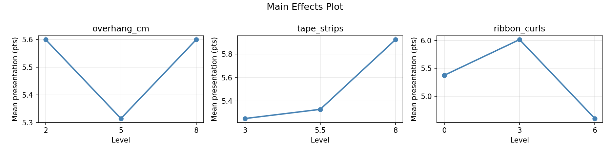
Normal Probability Plot of Effects
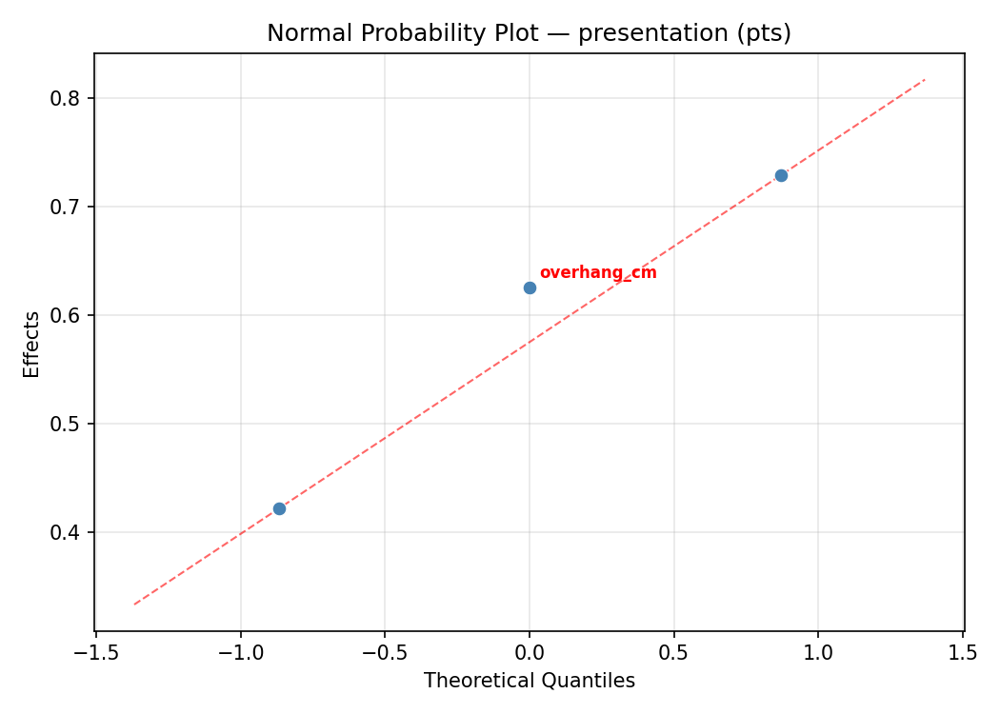
Half-Normal Plot of Effects
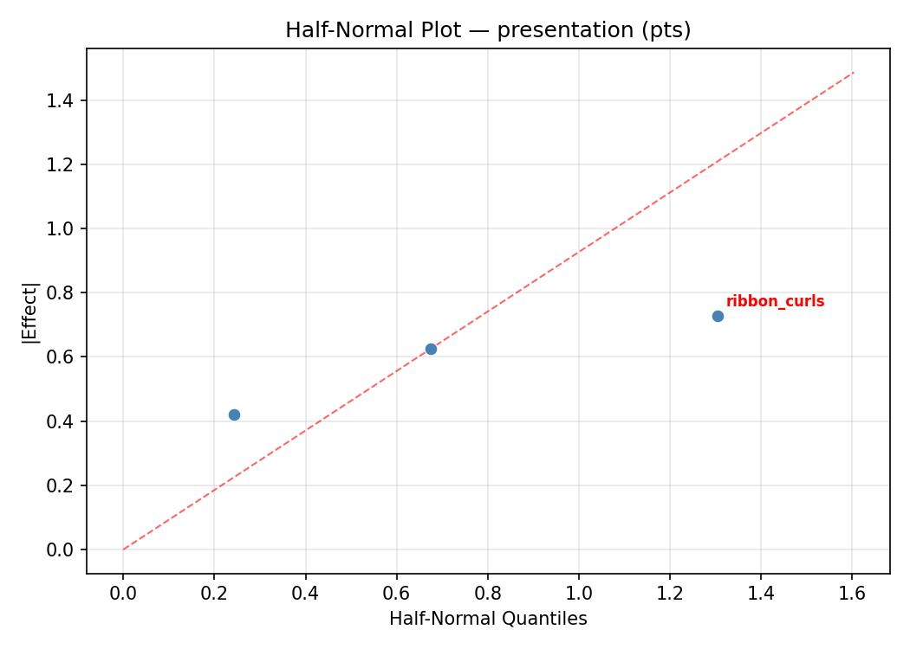
Model Diagnostics
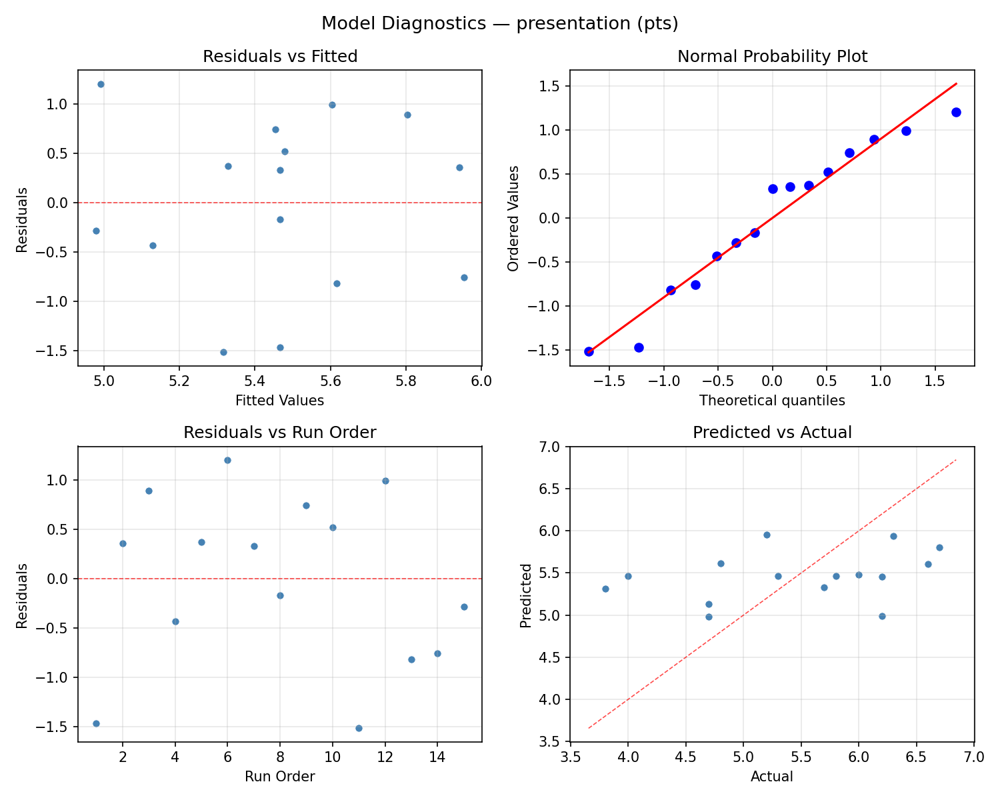
Response: waste_pct
Top factors: tape_strips (61.8%), overhang_cm (21.4%), ribbon_curls (16.8%).
ANOVA
| Source | DF | SS | MS | F | p-value |
|---|
| Source | DF | SS | MS | F | p-value |
| overhang_cm | 2 | 2.0762 | 1.0381 | 0.240 | 0.7924 |
| tape_strips | 2 | 22.3262 | 11.1631 | 2.576 | 0.1369 |
| ribbon_curls | 2 | 1.7548 | 0.8774 | 0.202 | 0.8208 |
| Lack | of | Fit | 6 | 192.1095 | 32.0183 |
| Pure | Error | 2 | 8.6667 | | |
| Error | 8 | 200.7762 | 4.3333 | | |
| Total | 14 | 226.9333 | 16.2095 | | |
Pareto Chart
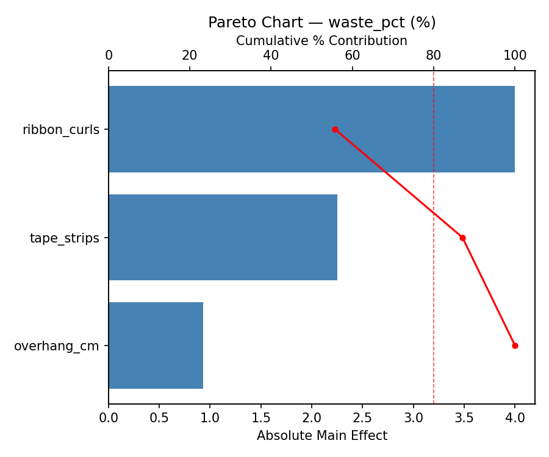
Main Effects Plot
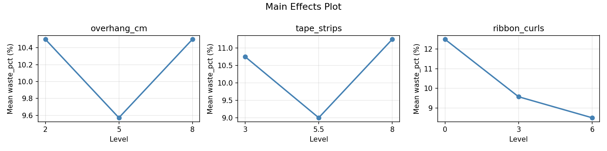
Normal Probability Plot of Effects
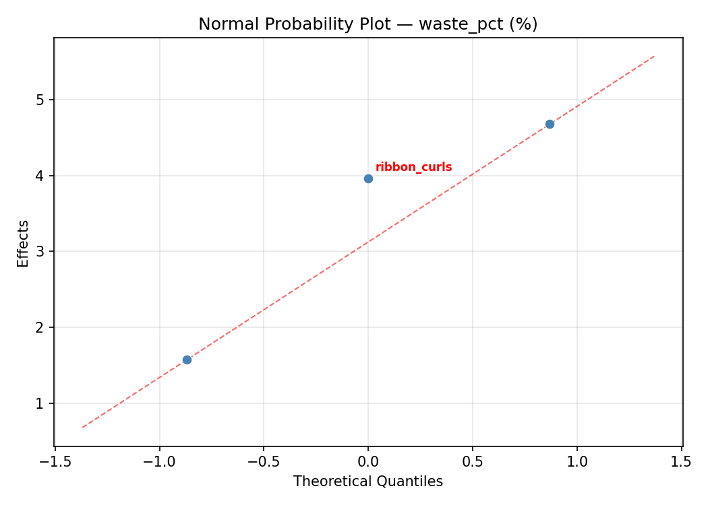
Half-Normal Plot of Effects
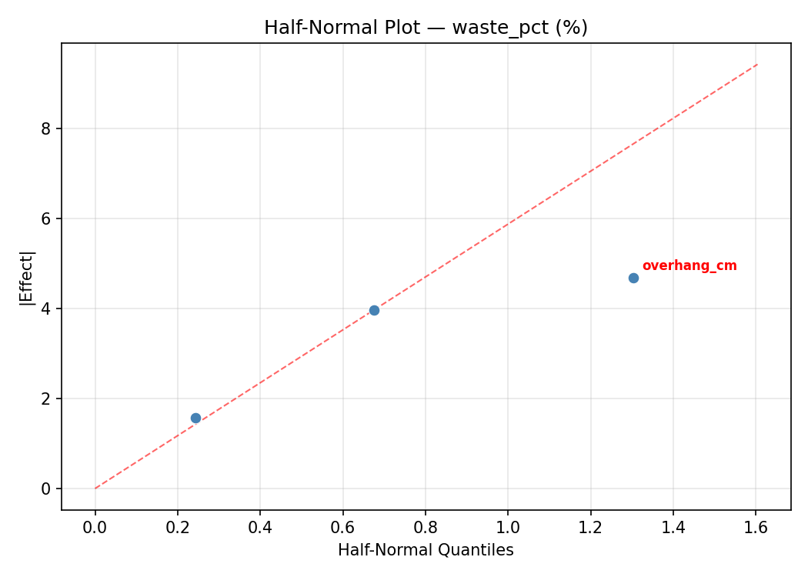
Model Diagnostics
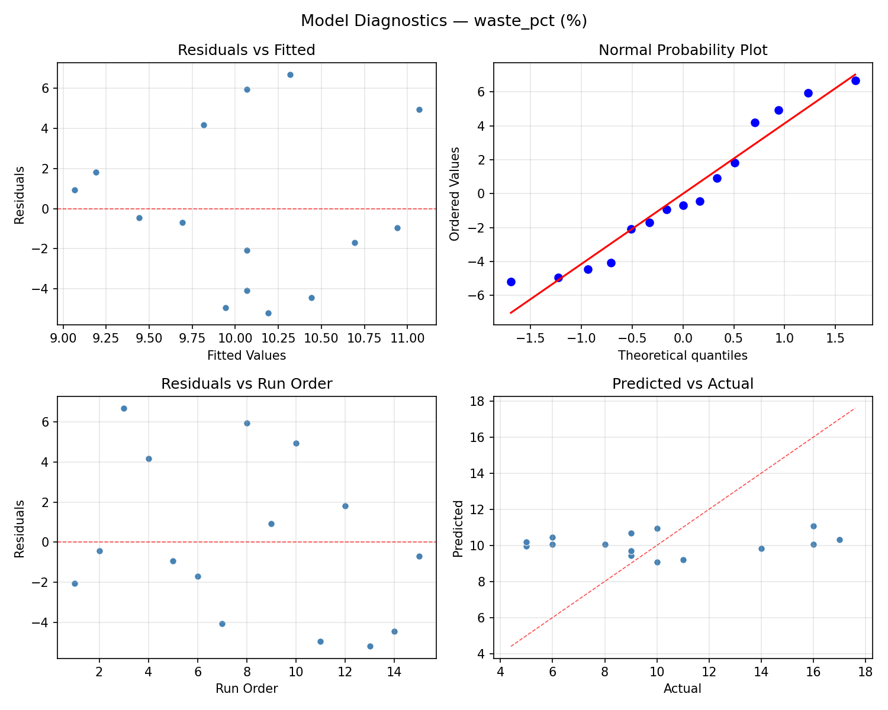
Response Surface Plots
3D surfaces fitted with quadratic RSM. Red dots are observed data points.
presentation overhang cm vs ribbon curls

presentation overhang cm vs tape strips

presentation tape strips vs ribbon curls

waste pct overhang cm vs ribbon curls
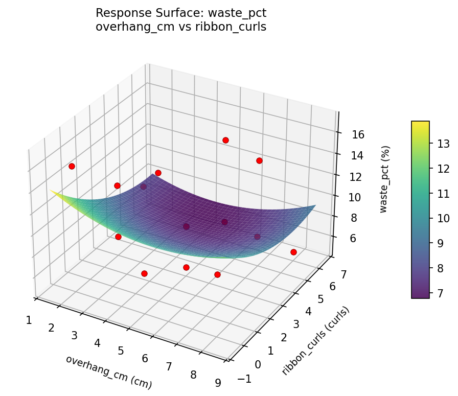
waste pct overhang cm vs tape strips

waste pct tape strips vs ribbon curls
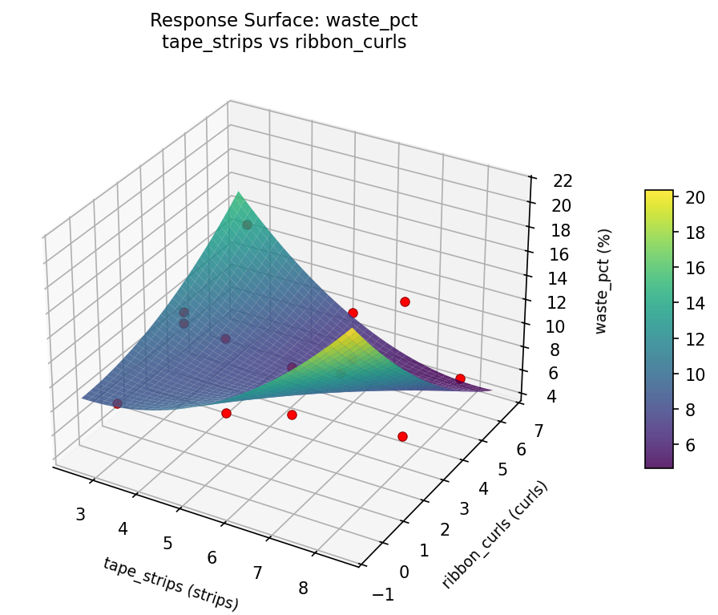
Multi-Objective Optimization
When responses compete, Derringer–Suich desirability finds the best compromise.
Each response is scaled to a 0–1 desirability, then combined via a weighted geometric mean.
Overall Desirability
D = 0.8637
Per-Response Desirability
| Response | Weight | Desirability | Predicted | Dir |
|---|
presentation |
1.5 |
|
6.45 0.8749 6.45 pts |
↑ |
waste_pct |
1.0 |
|
6.42 0.8472 6.42 % |
↓ |
Recommended Settings
| Factor | Value |
|---|
overhang_cm | 8 cm |
tape_strips | 8 strips |
ribbon_curls | 6 curls |
Source: from RSM model prediction
Trade-off Summary
Sacrifice = how much worse than single-objective best.
| Response | Predicted | Best Observed | Sacrifice |
|---|
waste_pct | 6.42 | 5.00 | +1.42 |
Top 3 Runs by Desirability
| Run | D | Factor Settings |
|---|
| #7 | 0.7484 | overhang_cm=2, tape_strips=3, ribbon_curls=3 |
| #6 | 0.7357 | overhang_cm=2, tape_strips=5.5, ribbon_curls=6 |
Model Quality
| Response | R² | Type |
|---|
waste_pct | 0.7613 | quadratic |
Full Multi-Objective Output
============================================================
MULTI-OBJECTIVE OPTIMIZATION
Method: Derringer-Suich Desirability Function
============================================================
Overall desirability: D = 0.8637
Response Weight Desirability Predicted Direction
---------------------------------------------------------------------
presentation 1.5 0.8749 6.45 pts ↑
waste_pct 1.0 0.8472 6.42 % ↓
Recommended settings:
overhang_cm = 8 cm
tape_strips = 8 strips
ribbon_curls = 6 curls
(from RSM model prediction)
Trade-off summary:
presentation: 6.45 (best observed: 6.70, sacrifice: +0.25)
waste_pct: 6.42 (best observed: 5.00, sacrifice: +1.42)
Model quality:
presentation: R² = 0.7180 (quadratic)
waste_pct: R² = 0.7613 (quadratic)
Top 3 observed runs by overall desirability:
1. Run #2 (D=0.7529): overhang_cm=8, tape_strips=5.5, ribbon_curls=6
2. Run #7 (D=0.7484): overhang_cm=2, tape_strips=3, ribbon_curls=3
3. Run #6 (D=0.7357): overhang_cm=2, tape_strips=5.5, ribbon_curls=6
Full Analysis Output
=== Main Effects: presentation ===
Factor Effect Std Error % Contribution
--------------------------------------------------------------
overhang_cm 1.1000 0.2358 50.2%
ribbon_curls 0.5750 0.2358 26.3%
tape_strips 0.5143 0.2358 23.5%
=== ANOVA Table: presentation ===
Source DF SS MS F p-value
-----------------------------------------------------------------------------
overhang_cm 2 2.5390 1.2695 3.431 0.0839
tape_strips 2 0.7373 0.3686 0.996 0.4108
ribbon_curls 2 0.8187 0.4093 1.106 0.3765
Lack of Fit 6 6.8383 1.1397 3.080 0.2653
Pure Error 2 0.7400 0.3700
Error 8 7.5783 0.3700
Total 14 11.6733 0.8338
=== Summary Statistics: presentation ===
overhang_cm:
Level N Mean Std Min Max
------------------------------------------------------------
2 4 5.0000 1.2754 3.8000 6.2000
5 7 5.3714 0.5648 4.7000 6.2000
8 4 6.1000 0.8832 4.8000 6.7000
tape_strips:
Level N Mean Std Min Max
------------------------------------------------------------
3 4 5.1000 1.2138 3.8000 6.7000
5.5 7 5.6143 0.9371 4.0000 6.6000
8 4 5.5750 0.6449 4.8000 6.2000
ribbon_curls:
Level N Mean Std Min Max
------------------------------------------------------------
0 4 5.8500 0.7681 4.7000 6.3000
3 7 5.3571 0.9744 3.8000 6.7000
6 4 5.2750 1.0626 4.0000 6.6000
=== Main Effects: waste_pct ===
Factor Effect Std Error % Contribution
--------------------------------------------------------------
tape_strips 2.8929 1.0395 61.8%
overhang_cm 1.0000 1.0395 21.4%
ribbon_curls 0.7857 1.0395 16.8%
=== ANOVA Table: waste_pct ===
Source DF SS MS F p-value
-----------------------------------------------------------------------------
overhang_cm 2 2.0762 1.0381 0.240 0.7924
tape_strips 2 22.3262 11.1631 2.576 0.1369
ribbon_curls 2 1.7548 0.8774 0.202 0.8208
Lack of Fit 6 192.1095 32.0183 7.389 0.1240
Pure Error 2 8.6667 4.3333
Error 8 200.7762 4.3333
Total 14 226.9333 16.2095
=== Summary Statistics: waste_pct ===
overhang_cm:
Level N Mean Std Min Max
------------------------------------------------------------
2 4 9.5000 4.6547 5.0000 16.0000
5 7 10.1429 3.7607 6.0000 16.0000
8 4 10.5000 5.0000 5.0000 17.0000
tape_strips:
Level N Mean Std Min Max
------------------------------------------------------------
3 4 10.5000 5.9161 5.0000 17.0000
5.5 7 8.8571 1.5736 6.0000 11.0000
8 4 11.7500 5.3151 5.0000 16.0000
ribbon_curls:
Level N Mean Std Min Max
------------------------------------------------------------
0 4 10.5000 2.3805 9.0000 14.0000
3 7 9.7143 5.0238 5.0000 17.0000
6 4 10.2500 4.3493 6.0000 16.0000
Optimization Recommendations
=== Optimization: presentation ===
Direction: maximize
Best observed run: #3
overhang_cm = 8
tape_strips = 5.5
ribbon_curls = 6
Value: 6.7
RSM Model (linear, R² = 0.0006, Adj R² = -0.2719):
Coefficients:
intercept +5.4667
overhang_cm +0.0250
tape_strips +0.0125
ribbon_curls -0.0125
RSM Model (quadratic, R² = 0.6463, Adj R² = 0.0096):
Coefficients:
intercept +5.1333
overhang_cm +0.0250
tape_strips +0.0125
ribbon_curls -0.0125
overhang_cm*tape_strips -1.0250
overhang_cm*ribbon_curls +0.1750
tape_strips*ribbon_curls +0.1500
overhang_cm^2 +0.1083
tape_strips^2 -0.3167
ribbon_curls^2 +0.8333
Curvature analysis:
ribbon_curls coef=+0.8333 convex (has a minimum)
tape_strips coef=-0.3167 concave (has a maximum)
overhang_cm coef=+0.1083 convex (has a minimum)
Notable interactions:
overhang_cm*tape_strips coef=-1.0250 (antagonistic)
Predicted optimum (from quadratic model, at observed points):
overhang_cm = 8
tape_strips = 5.5
ribbon_curls = 6
Predicted value: 6.2625
Surface optimum (via L-BFGS-B, quadratic model):
overhang_cm = 8
tape_strips = 3
ribbon_curls = 6
Predicted value: 6.8083
Model quality: Moderate fit — use predictions directionally, not precisely.
Factor importance:
1. ribbon_curls (effect: 0.9, contribution: 63.6%)
2. tape_strips (effect: 0.4, contribution: 29.3%)
3. overhang_cm (effect: 0.1, contribution: 7.1%)
=== Optimization: waste_pct ===
Direction: minimize
Best observed run: #11
overhang_cm = 2
tape_strips = 3
ribbon_curls = 3
Value: 5.0
RSM Model (linear, R² = 0.3514, Adj R² = 0.1745):
Coefficients:
intercept +10.0667
overhang_cm +1.1250
tape_strips +1.7500
ribbon_curls +2.3750
RSM Model (quadratic, R² = 0.7521, Adj R² = 0.3060):
Coefficients:
intercept +13.0000
overhang_cm +1.1250
tape_strips +1.7500
ribbon_curls +2.3750
overhang_cm*tape_strips -1.7500
overhang_cm*ribbon_curls +1.5000
tape_strips*ribbon_curls +2.7500
overhang_cm^2 -2.2500
tape_strips^2 -2.5000
ribbon_curls^2 -0.7500
Curvature analysis:
tape_strips coef=-2.5000 concave (has a maximum)
overhang_cm coef=-2.2500 concave (has a maximum)
ribbon_curls coef=-0.7500 concave (has a maximum)
Notable interactions:
tape_strips*ribbon_curls coef=+2.7500 (synergistic)
overhang_cm*tape_strips coef=-1.7500 (antagonistic)
overhang_cm*ribbon_curls coef=+1.5000 (synergistic)
Predicted optimum (from quadratic model, at observed points):
overhang_cm = 5
tape_strips = 8
ribbon_curls = 6
Predicted value: 16.6250
Surface optimum (via L-BFGS-B, quadratic model):
overhang_cm = 2
tape_strips = 3
ribbon_curls = 6
Predicted value: 1.0000
Model quality: Good fit — general trends are captured, some noise remains.
Factor importance:
1. ribbon_curls (effect: 4.8, contribution: 39.8%)
2. tape_strips (effect: 4.0, contribution: 33.8%)
3. overhang_cm (effect: 3.1, contribution: 26.3%)